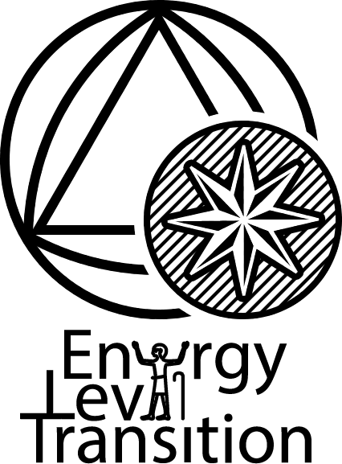

|  |
您正在阅读ELT2和ELT3的存档版本。本存档版本截取自百度贴吧的原帖（点击此处进入ELT2 ELT3，也可以通过 dwz.cn/ELT_2 和 dwz.cn/ELT_3 访问），未对内容进行任何实质性的改动。在阅读时需要注意：
|
| 上传信息此版本的 ELT archive 于2022年10月15日上传至此处。 | |
| 题外话TeamMoeg正在开发基于ELT的mod，这里也涉及ELT材质的使用条例。点此了解 | |
| 授权目前ELT材质的使用条例是相当宽松的。但是，您不应随意转载ELT原帖及原帖的各种整理版（包括本版本）。在与他人分享时，请直接分享作者发布的下载链接或帖子。 | |
| '20.11.23更新删除重复楼层，并补全缺失楼层；对样式进行了微调；增加ELT3的内容。 | |
| @huangziye812，于2020年11月21日 | |